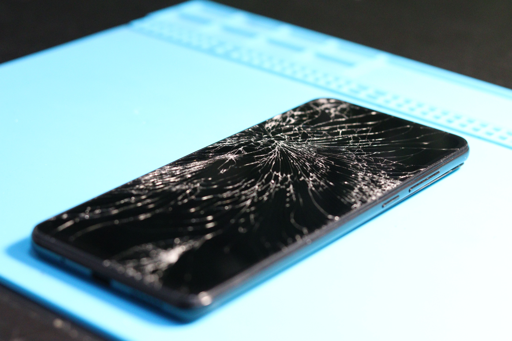
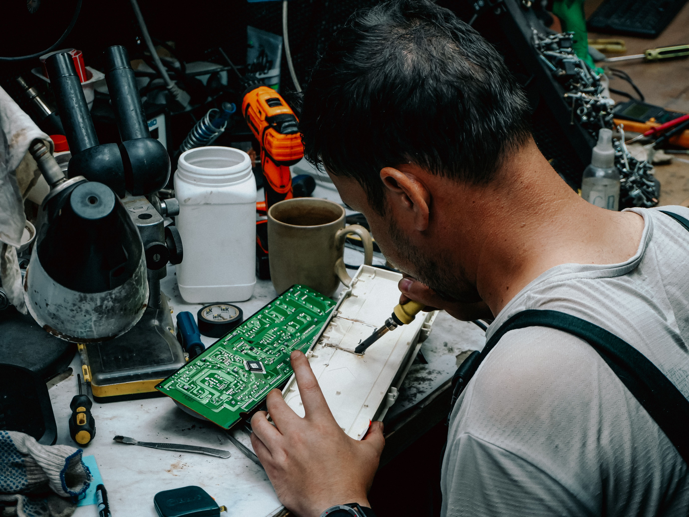

Reliable, Affordable Tech Repairs
TechFix Solutions offers professional repair services for phones, laptops and gaming consoles, plus IT support for small businesses. We combine fast turnaround times, fair pricing and friendly service to get your devices working again with the least amount of hassle.
 View Our Services
View Our Services
Why Choose TechFix Solutions?
Fast Turnaround
Most common repairs are completed within 24-48 hours.
Certified Technicians
Every repair is carried out by trained, experienced staff.
Fair Pricing
Upfront quotes with no hidden costs before any work begins.
Our Core Services

Phone Repair
Screen replacements, battery swaps and water damage recovery.

Laptop Repair
Hardware faults, software issues and performance upgrades.

Console Repair
Hardware faults, overheating issues and controller repairs.
Have a Device That Needs Fixing?
Get in touch with our team today and let us know what's going on.
Contact Us